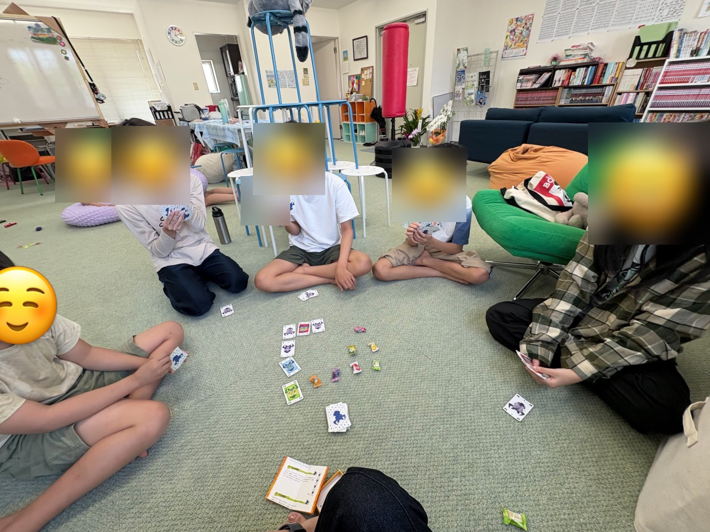
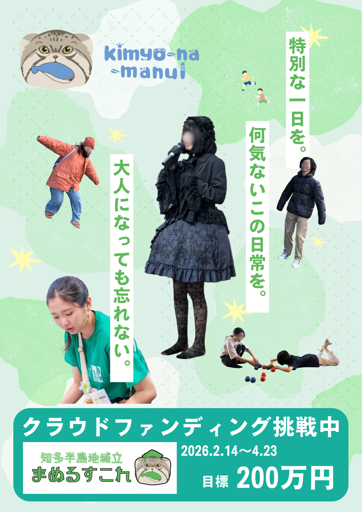

LBL（ライフデザイン・ベースド・ラーニング）で子どもの個性と主体性を育む、 小中高一貫のオルタナティブスクール。各学年定員4名。


月2回以上、地域のみんなが集まるリアルイベントを開催。 子育て講座・クラス会議体験・久遠チョコレートにまつわるイベント・ 映画上映会など多彩な内容で実施しています。
24時間365日受付（12時間以内に対応）。 LINE・オンライン・対面、いずれも可。 オンライン交流会も月2回（Discord）開催しています。
8月に「アドラー心理学講座エルム」と合わせて実施予定。 宿題は持参不要。人生の中の自由な時間＝「積極的余暇」を 体感してもらいます。定員30名。
多様な背景を持つ子ども・若者を市民・企業・行政の催しに派遣し、
当事者経験の共有や講演を行います。
【実績】2026年6月14日 武豊のイベントにて理事2名が登壇。
様々なマイノリティの当事者がチャレンジする姿や 経験を動画で発信予定。毎日配信を目標にしています。
地域への広報・普及啓発のため、紙媒体での情報発信を予定しています。